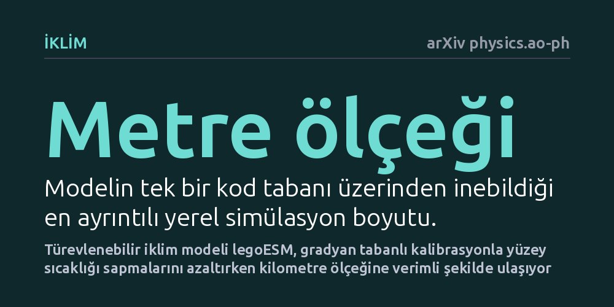

IKLIM · arXiv physics.ao-ph · 2026-10-10
Araştırmacılar, mevcut iklim modellerinin modern donanımlara ve yapay zekâya uyumsuzluğunu aşmak için JAX tabanlı modüler bir Dünya sistemi modeli tasarladı. Geliştirilen legoESM, metre ölçeğindeki türbülanslardan küresel iklime uzanan simülasyonlar üretirken gradyan temelli kalibrasyonla yüzey sıcaklığı hatalarını azalttı.
İklim modellerinin hantal ve müdahale edilemez yapılar olmak zorunda olmadığını, modern yapay zekâ ve donanım mimarileriyle lego parçaları gibi esnekleştirilip doğrudan verilerle kalibre edilebileceğini kanıtlıyor.

Dünya sistemi modelleri gezegenimizin iklim geleceğini öngörmede en temel bilimsel dayanağımız olsa da, sera gazı salımlarına verilen iklim tepkilerinde ciddi belirsizlikler sürmektedir. Özellikle bulutların güneş ışınımını nasıl yansıtıp geri besleme oluşturduğu konusundaki soru işaretleri, uzun vadeli tahminlerin güvenilirliğini sınırlamaya devam ediyor.
Bu bilimsel açmazın yanında büyük bir teknik sorun da bulunuyor: Günümüzde kullanılan iklim modellerinin yazılım mimarileri onlarca yıl öncesinin anlayışıyla geliştirildi. Bu devasa kod tabanları, modern grafik işlemciler (GPU) gibi donanım hızlandırıcılarına ve güncel yapay zekâ yöntemlerine uyum sağlayamayacak kadar hantal kalıyor.
Mevcut modellerde herhangi bir fiziksel denklemi değiştirmek ya da makine öğrenimi tabanlı yeni bir yaklaşımı sisteme entegre etmek aylar süren zahmetli bir yeniden yazım gerektiriyor. Bilim dünyasının hem yüksek çözünürlüklü simülasyonları hızla çalıştıracak hem de yeni kuramsal fikirlerin kolayca denenmesine izin verecek esnek bir altyapıya duyduğu ihtiyaç giderek büyüyor.
Araştırmacılar bu darboğazı aşmak için JAX kütüphanesini temel alan "legoESM" adını verdikleri yeni bir Dünya sistemi modeli inşa etti. Bu yaklaşım, iklim topluluğunun on yıllar boyunca biriktirdiği fiziksel parametrelendirmeleri ve sayısal yöntemleri terk etmek yerine, onları yapay zekâ kodlama ajanları yardımıyla modern ve bütünleşik bir çatı altında yeniden yazdırdı.
Modelin en dikkat çekici yönü, dinamik çekirdeklerin, fiziksel şemaların, hesaplama ızgaralarının ve karmaşıklık düzeylerinin birer lego parçası gibi birbirinin yerine takılıp çıkarılabilmesidir. Geliştiriciler bu sistemde ister klasik fizik denklemlerini isterse makine öğrenimiyle eğitilmiş öykünücüleri bağımsız birer modül olarak kullanabiliyor.
Yapılan kıyaslama testleri, legoESM'nin tek bir kod tabanı üzerinden metre ölçeğindeki büyük girdap simülasyonlarından başlayarak küresel hava durumu ve iklim simülasyonlarına kadar tutarlı sonuçlar üretebildiğini gösterdi. Bu çok ölçekli yapı, yerel türbülanslar ile küresel hava hareketlerini aynı çatı altında bağlamayı mümkün kılıyor.
Sistemin uçtan uca türevlenebilir olması, gradyan tabanlı kalibrasyon yöntemlerinin doğrudan uygulanabilmesini sağladı. Araştırmacılar bu sayede kara yüzeyi sıcaklık sapmalarını belirgin şekilde azaltmayı başardı ve modeli grafik işlemciler üzerinde kilometre ölçeğindeki küresel simülasyonlara verimli biçimde ölçekledi.
Modüler yapı, bilim insanlarının yapısal belirsizlikleri araştırmasına ve farklı fiziksel varsayımları doğrudan birbiriyle kıyaslamasına zemin hazırlıyor. Hipotez testleri artık aylar süren kod revizyonları yerine, model parçalarının kolayca değiştirilmesiyle sistematik biçimde yürütülebilecek.
legoESM, hem iklim biliminde hipotez sınama ve eğitim için açık bir topluluk altyapısı hem de çok ölçekli diğer fiziksel sistemler için modern bir yazılım şablonu sunuyor. Ancak bu çalışmanın henüz önbaskı aşamasında olduğu, bağımsız hakem denetiminden geçtikten ve uzun vadeli iklim tahminlerinde kapsamlı biçimde doğrulandıktan sonra tam potansiyelinin anlaşılacağı unutulmamalıdır.